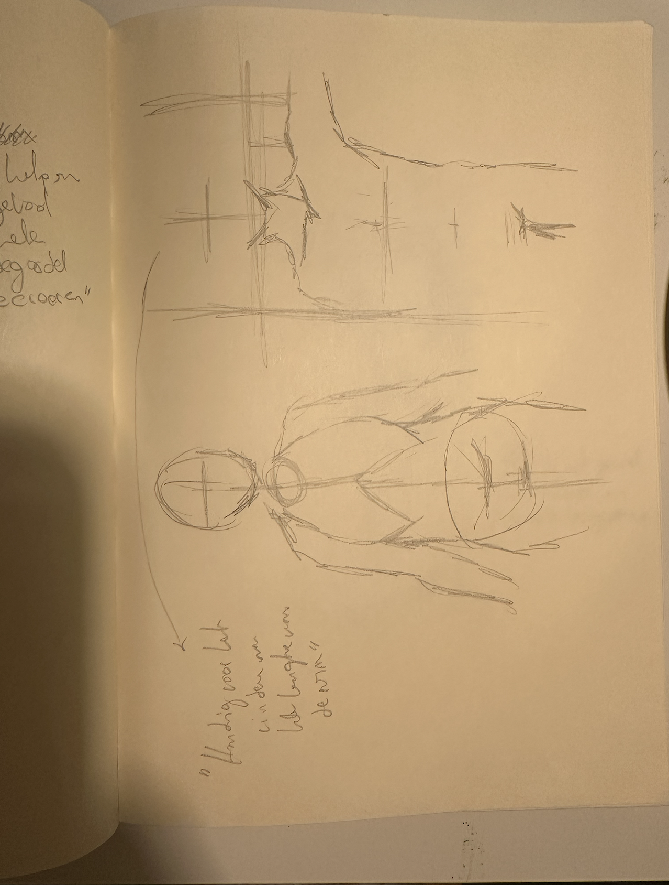

Tijdens mijn opleiding Communication and Multimedia Design (CMD) heb ik besloten om mijn
artistieke vaardigheden te verbeteren door deel te nemen aan de cursus "Drawing Foundations: Figure" door
Amy Wynne. Deze cursus richt zich op de basisprincipes van het tekenen van de menselijke figuur, van gebaren
en beweging tot anatomie en schaduwen.
“The artist is a receptacle for emotions that come from all over the place: from the sky, from the earth,
from a scrap of paper, from a passing shape, from a spider's web.”
Pablo Picasso
Gesture Drawing
In deze module leerde ik hoe ik de essentie en beweging van het menselijk lichaam kan vastleggen
door middel van snelle schetsen. Dit helpt om dynamiek en leven in mijn tekeningen te brengen.
Anatomy Drawing
Deze module richtte zich op de structuur en vormen van het lichaam. Door te leren over de
onderliggende botten en spieren, kon ik meer realistische en nauwkeurige tekeningen maken.
Volume and Shadows
In deze module leerde ik hoe ik diepte en dimensie aan mijn tekeningen kan toevoegen door middel
van schaduwen en vormen. Dit maakt mijn tekeningen realistischer en levendiger.
Spotlight
Meer over elke deel van mijn tekencursus
De Cursus
Toen ik besloot mijn studierichting een beetje om te gooien, viel mijn keuze op een tekencursus op
LinkedIn Learning, gegeven door Amy Wynne. Deze keuze was perfect voor mij omdat het tekenen van figuren
precies datgene is wat ik zowel interessant vind als wat ik kan gebruiken in mijn CMD-studie. Tekenen is
meer dan alleen hobby; het helpt ook om ideeën visueel te delen, wat super belangrijk is in mijn
vakgebied.
Amy Wynne leert ons de basis van het tekenen van mensen, iets wat op het eerste gezicht misschien
moeilijk lijkt, maar zij maakt het een stuk begrijpelijker. De cursus bestaat uit vier delen die elk een
ander stukje van de puzzel behandelen:
- Beweging en Houding: We beginnen met te leren hoe je de actie en houding van een
persoon op papier zet. Dit is belangrijk om je tekeningen leven te geven.
- Opbouw van het lichaam: Dan duiken we in hoe het lichaam in elkaar zit. Amy leert
ons over botten en spieren en hoe deze kennis je tekeningen beter maakt.
- Belangrijke Punten en Verhoudingen: Hier kijken we naar specifieke punten op het
lichaam die helpen bij het juist tekenen van een persoon. Het gaat om het goed krijgen van de maten
en vormen.
- Diepte en schaduw: In het laatste deel leren we hoe je je tekening eruit laat
springen door licht en schaduw te gebruiken. Dit maakt je figuur bijna echt.
Leerdoelen
Met de cursus van Amy Wynne over het tekenen van figuren, heb ik een aantal specifieke doelen voor ogen:
- Geschiedenis van Figuurtekenen Leren: Ik wil meer weten over hoe mensen door de
tijd heen figuren hebben getekend. Dit helpt me om mijn eigen tekenstijl te ontwikkelen.
- De juiste Materialen Gebruiken: Ik ga experimenteren met verschillende
tekenmaterialen om te zien wat het beste werkt voor het tekenen van mensen. Dit is belangrijk om
mijn tekeningen zo goed mogelijk te maken.
- Beweging en Structuur Tekenen: Het leren vastleggen van hoe mensen bewegen en hoe
hun lichaam in elkaar zit, staat centraal. Dit maakt tekeningen realistischer.
- Symmetrie en Asymmetrie Herkennen: Ik wil leren hoe ik balans in mijn tekeningen
kan brengen, maar ook hoe ik interessante houdingen kan creëren door ongelijkheid.
- Gewicht en Balans Plaatsen: Het goed weergeven van hoe een persoon staat of
beweegt, is mijn doel. Dit betekent dat ik moet letten op waar het gewicht van het lichaam zit.
- Mannen en Vrouwen Juist Tekenen: Ik wil de verschillen in lichaamsvormen tussen
mannen en vrouwen begrijpen en dit kunnen toepassen in mijn tekeningen.
- Staande Figuren Tekenen: Mijn uitdaging is om mensen correct te tekenen als ze
staan, rekening houdend met alle bovenstaande punten.
- Diepte en Schaduw Toevoegen: Ik wil leren hoe ik schaduw kan gebruiken om mijn
tekeningen meer diepte te geven, zodat ze er bijna echt uitzien.
Plan van Aanpak
Periode: 3 tot en met 11 februari
Doelstelling: Het ontwikkelen van geavanceerde tekenvaardigheden in figuurtekenen, met
een focus op het verbeteren van technieken voor het vastleggen van beweging, structuur, proporties,
volume, en schaduw, en het toepassen van deze vaardigheden in sketchnoting.
Totaal Bestede Tijd: 28 uur
Week 1: Basis en Structuur
- 3-5 februari (8 uur): Bekijken van introductie en module over beweging en houding.
Praktijkoefeningen met snelle schetsen om dynamiek vast te leggen.
- 6-8 februari (8 uur): Verdere studie van anatomische structuur en proporties.
Gedetailleerde tekeningen met aandacht voor menselijke anatomie.
Week 2: Diepte en Detail
- 9-11 februari (8 uur): Bestuderen van technieken voor volume en schaduw. Creëren
van tekeningen die diepte en realisme tonen door licht- en schaduweffecten.
- 12 februari (2 uur): Evaluatie van de voortgang en integratie van technieken in een
samengestelde tekening.
Week 2: Reflectie en Toepassing
- 13-14 februari (1 uur): Reflectie op de cursus en overweging van de toepassing van
geleerde vaardigheden in CMD-projecten. Product biografie afronden als samenvatting van de
cursusinhoud.
Reflectie
Wat zijn de belangrijkste zaken die je hebt geleerd in deze cursus? (minimaal 5 punten)
- Anatomische Structuren: Inzicht in de opbouw van botten en spieren voor realistische figuren.
- Beweging en Houding: Technieken om dynamische houdingen en bewegingen vast te leggen.
- Verhoudingen en Symmetrie: Correcte verhoudingen toepassen en symmetrie herkennen.
- Licht en schaduw: Gebruik van licht en schaduw om diepte en realisme te creëren.
- Materiaalkennis: Experimenteren met verschillende materialen zoals potloden en houtskool.
Welk inzicht neem je mee?
Het belangrijkste inzicht dat ik meeneem, is het belang van geduld en voortdurende oefening in het
ontwikkelen van tekenvaardigheden. Door regelmatig te oefenen en gedetailleerde aandacht te besteden aan
anatomie, beweging en licht, kan ik mijn vaardigheden aanzienlijk verbeteren. Dit inzicht benadrukt dat
consistente inspanning en reflectie essentieel zijn voor artistieke groei en succes.
Hoe denk je deze kennis of vaardigheden te gebruiken bij komende vakken of projecten?
Ik zal deze kennis vooral gebruiken bij vormgeving en sketchnoting. Door realistische schetsen, en het
gebruik van licht en schaduw, kan ik diepte en impact aan mijn werk toevoegen. Dynamische houdingen en
bewegingen zullen mijn ontwerpen levendiger maken, wat nuttig is voor intuïtieve en aantrekkelijke
gebruikersinterfaces. Voortdurend oefenen en reflecteren zal mijn tekenvaardigheden verbeteren.
Wat vind je nog moeilijk en moet je nog verder ontwikkelen?
Ik vind het nog moeilijk om anatomische details precies weer te geven en de juiste verhoudingen in
verschillende houdingen vast te leggen. Daarnaast moet ik mijn vaardigheden in het gebruik van licht en
schaduw verder ontwikkelen om meer diepte en realisme in mijn tekeningen te brengen.
Hoe heeft de cursus bijgedragen aan je ontwikkeling?
De cursus heeft mijn technische vaardigheden in figuurtekenen aanzienlijk verbeterd, vooral in het
begrijpen van anatomie. Het heeft me meer zelfvertrouwen gegeven in mijn tekenwerk en me geholpen om
effectiever visuele ideeën te communiceren. Door de praktische oefeningen en stapsgewijze aanpak heb ik
een solide basis gelegd voor verdere artistieke groei en professionele toepassingen in vormgeving en
sketchnoting.
Wat zou je de volgende keer anders doen? Welk cijfer geef je jezelf?
Volgende keer zou ik meer tijd besteden aan het oefenen van complexe houdingen en het experimenteren met
verschillende materialen. Ik geef mezelf een 8, omdat ik veel heb geleerd en vooruitgang heb geboekt,
maar er is nog ruimte voor verbetering.
Toepassing in de Praktijk: Schetsen
Hier is een overzicht van enkele schetsen die ik tijdens de cursus heb gemaakt, waarin ik de geleerde
technieken heb toegepast:
